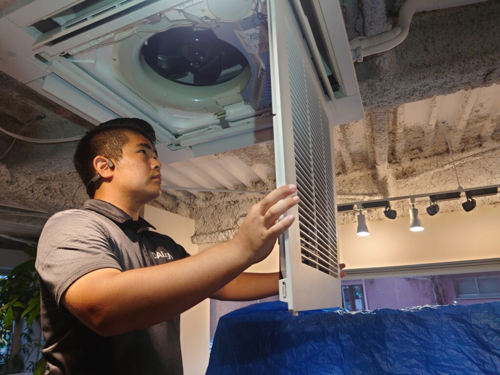
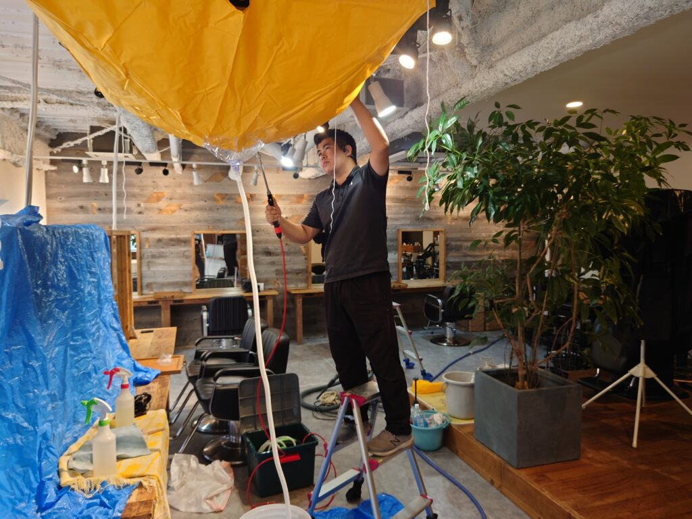

横浜元町 お洒落な美容室様の天井エアコンクリーニングをしました!


横浜元町のお洒落な美容室様、営業開始の10:00までに、お店の天井エアコンクリーニングを実施しました! お洒落な店内を綺麗に保ちながらクリーニングしました!
エアコンクリーニングで、より快適で気持ち良いエアーを皆様にサプライ出来る様、独自開発した多数の工夫を施してクリーニングを実施しております。エアコンクリーニングでは周辺1.5㍍の小物類、衣類、など事前に移動が可能でしたらお願いしております。エアコンの真下にお子様の勉強机が有るケース、エアコンの真下にベッドが有るケース、いずれも移動は困難なケースがとても多いですが、全く問題ございませんです専用カバー、専用マスカー等で適切に養生を施してクリーニングを実施しますのでご安心下さい。
フイルタークリーニングでは、汚れの主成分が埃系なのか油脂汚れ系なのかを見分け、それぞれに適した専用薬剤を適切に使用してクリーニングしていきます。洗浄したフイルターは室内、室外の安全なエリアにタオルを敷いて乾燥させていきます。エアコンカバー、各種パーツ類を適切に取外し、これらカバーやパーツ類も同様に、埃汚れ系なのか油脂汚れ系なのかを適切に見分け、最適な専用薬剤を用いてピカピカにクリーニングしていきます。アルミフィン、吹き出し口シロッコには、多量の埃汚れと油脂汚れの堆積汚れが付着しているケースも多いです、この頑固な堆積汚れを3種類の専用薬剤の中から最も適したタイプをチョイスして入念に塗布します。数分後薬剤が完全に浸透したタイミングで、エアコン専用高圧洗浄マシーンを用いて細かい隅々まで綺麗に高圧洗浄クリーニングを実施していきます。DAIZENではエアコン内部に溜まった堆積汚れが、高圧洗浄クリーニングで流れ落ちる様を直接お客様に視て頂いております、汚水が見る見る透明な綺麗な水に変わる様を直接ご覧になり多くのお客様が感動を味わって頂いております。ぜひ、DAIZENクリーニングメソッドを用いた感動するエアコンクリーニングをお試し下さい、宜しくお願いいたします!